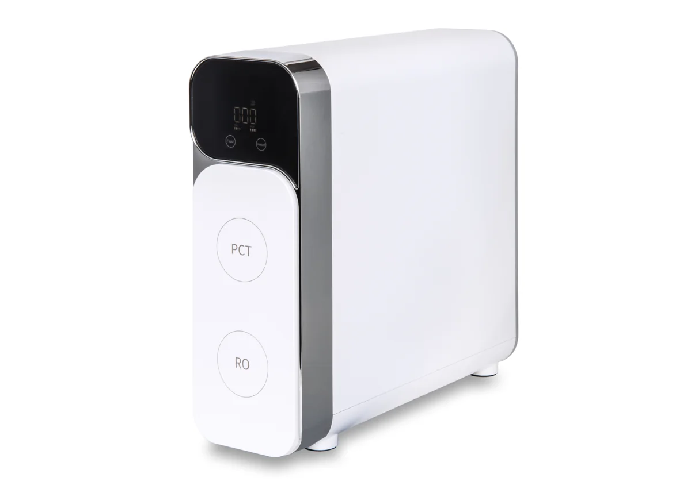

Direct Flow RO
SONVITA Aqua Smart Duo evo II
Die Aqua Smart Duo evo II liefert kristallklares Trinkwasser direkt aus dem Hahn. Höchste Filterleistung, leiser Betrieb und edles Design.
449,00 €
Technische Daten
| Höhe | 407mm |
| Länge | 145mm |
| Tiefe | 436mm |
| Leistung | 2 Filterstufen |
| Highlights | Untertisch Osmoseanlage; 600 GPD (1,5 L/Min); 2-stufige Filterung |
Beschreibung
Die Aqua Smart Duo evo II liefert kristallklares Trinkwasser direkt aus dem Hahn. Höchste Filterleistung, leiser Betrieb und edles Design.
Datenhinweis
Preis, Bild und technische Angaben stammen von der verlinkten offiziellen Produktseite. Varianten und Verfügbarkeit können sich ändern.